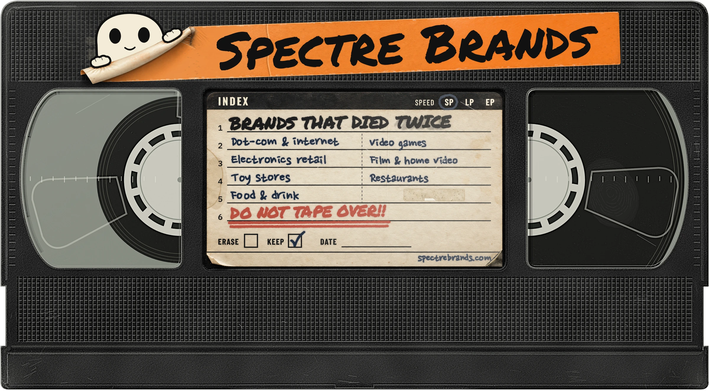
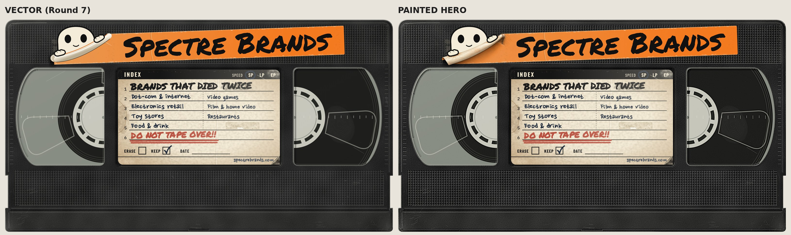
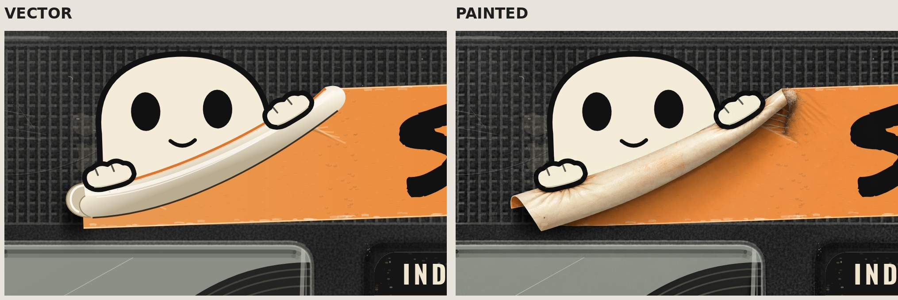
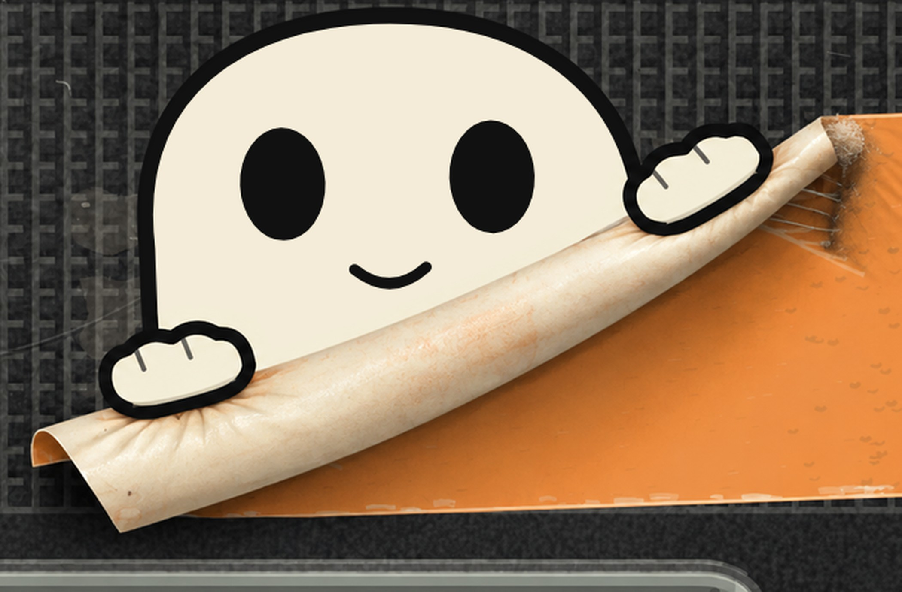
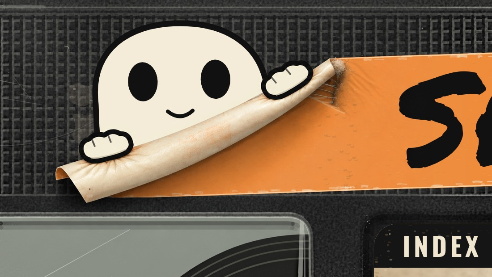
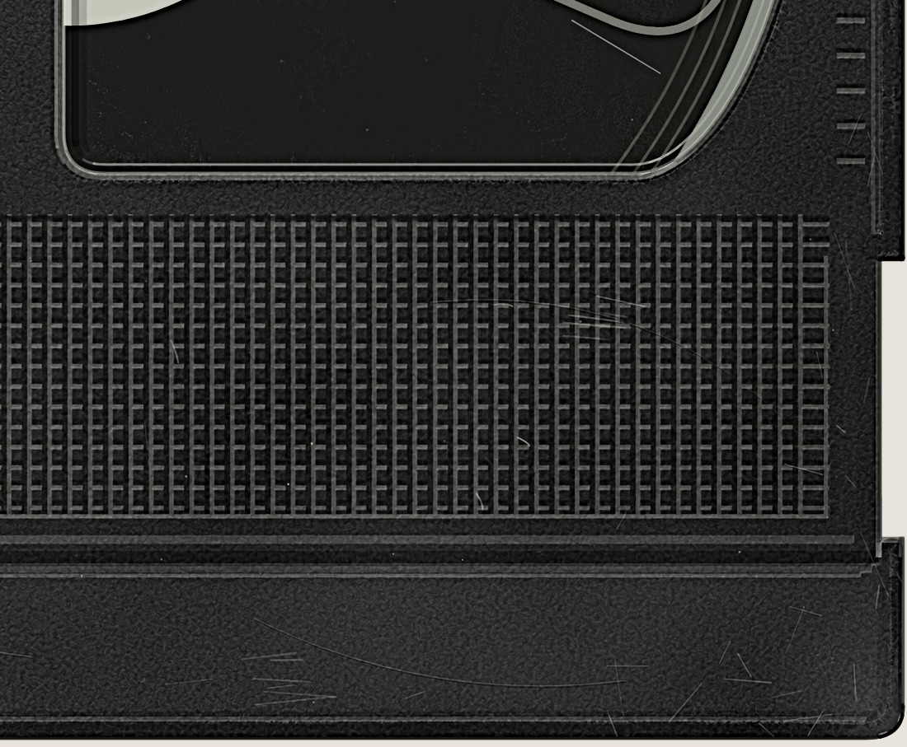
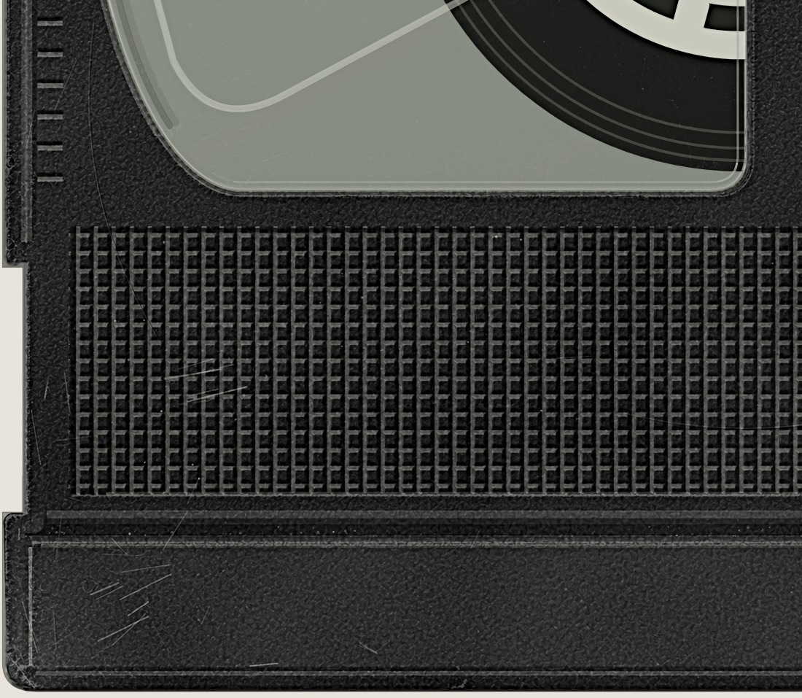

A lifelike, painted version of the final V01 logo, made for the homepage hero. The peel and shell surfaces are AI-painted from the Round 7 render. The geometry, the ghost's face, the strip lettering and the whole index label come pixel for pixel from the vector master. Small sizes, favicons and the header keep using the Round 7 vector.
hero-4000.png (master, RGBA)hero-web.webphero-web.avifhero-web.png · all 2400 px






